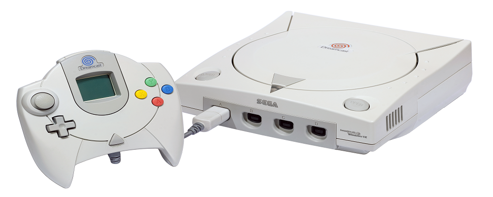
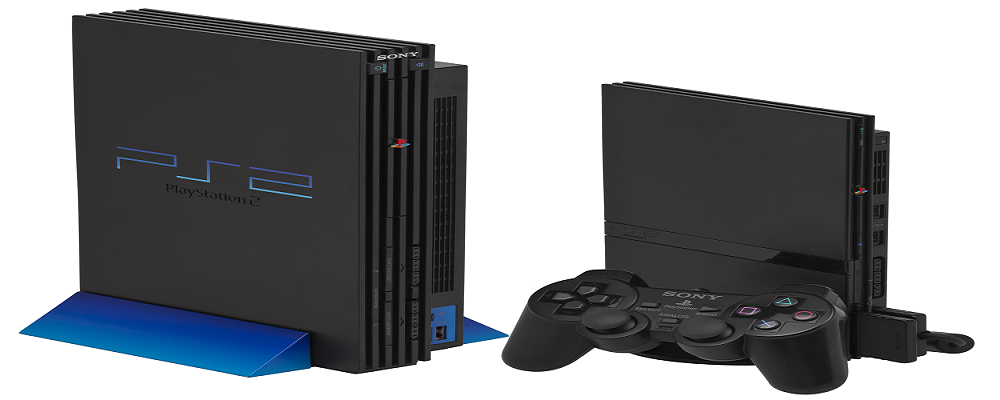
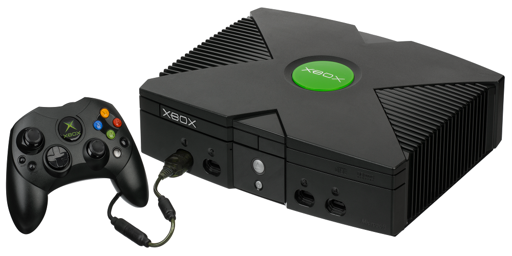
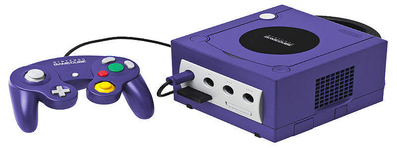
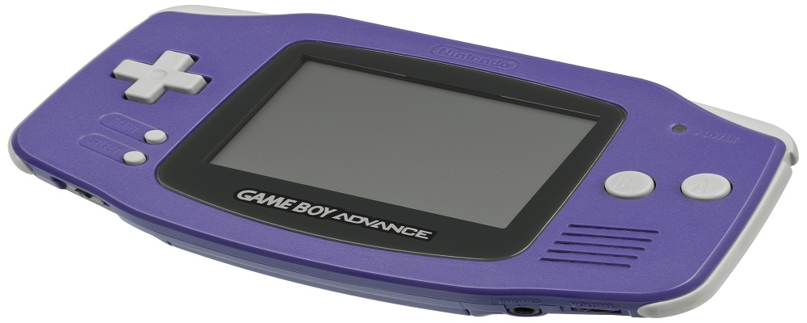
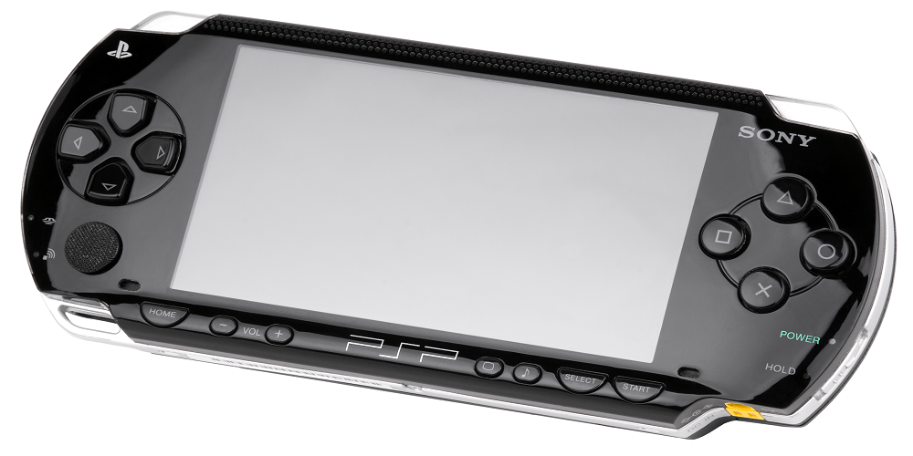

Esta generación de consolas se conoce inapropiadamente como la era de las consolas de 128 bits , después de la generación anterior que terminó con la Nintendo 64 , la primera consola completamente de 64 bits en la historia de los videojuegos. En los años de las generaciones anteriores se había establecido una verdadera "guerra de bits", análoga a la carrera moderna por el mayor número de polígonos visibles en la pantalla o en alta resolución, pero mientras que en el pasado el número de bits se refería al tamaño de la palabra realmente utilizada por la CPU , en el caso de los 128 bits, puede referirse como máximo a componentes periféricos como buses , según el modelo.
Es la sexta y última consola de videojuegos hasta ahora producida por Sega. Fue desarrollada en cooperación con Hitachi y Microsoft. Dreamcast es la sucesora de Sega Saturn y fue lanzada al mercado para ganar terreno a PlayStation de Sony y Nintendo 64 de Nintendo, y competir con los sistemas sucesores a estos.Sus principales características son su lector óptico GD-ROM y su procesador Hitachi. El sistema fue el primero en tener un módem incorporado para jugar en línea.
Es la segunda videoconsola de sobremesa producida por Sony Computer Entertainment, y la tercera consola de Sony en ser diseñada por Ken Kutaragi. Además de ser la sucesora de la PlayStation.Fue lanzada por primera vez el 4 de marzo del año 2000 en Japón, y unos meses después en el resto del mundo. Es la videoconsola más vendida de la historia, con más de 160 millones de unidades vendidas. Esta consola es también la que más títulos posee, aproximadamente 3870 títulos, seguida por su predecesora la PlayStation con unos 2500 títulos.
Es una videoconsola de sobremesa de sexta generación producida por Microsoft y la primera de esta empresa, en colaboración con Intel. Su principal característica es su procesador central basado en el procesador Intel Pentium III. El sistema también incorpora un lector de DVD, un disco duro interno, puerto ethernet y por último el sistema dispone de cuatro conectores para los mandos
Quinta consola de sobremesa hecha por Nintendo. Es la sucesora de la Nintendo 64 y la predecesora de la Wii. Sus principales características son su procesador central basado en un IBM PowerPC, y su procesador gráfico desarrollado por ATI Technologies. Nintendo, por primera vez, prescinde del cartucho (ROM) como formato de almacenamiento, y adopta un formato óptico propio, el Nintendo Optical Disc.
Es una popular consola de videojuegos de la compañía Nintendo. Cuenta con un procesador ARM propio de 32 bits a 16,7 MHz, basado en la arquitectura RISC, con una potencia suficiente para permitir el desarrollo de juegos utilizando el lenguaje de programación C. El microprocesador ARM es capaz de ejecutar tanto un juego de instrucciones con un tamaño de instrucción de 32 bits, como un juego de instrucciones llamado "Thumb" de un tamaño de 16 bits (pero igualmente, de 32 bits).
Es una videoconsola portátil de la multinacional de origen japonés, y la cuarta consola de Sony en ser diseñada por Ken Kutaragi, PSP servía para videojuegos, conectarse a internet y reproducir y ver multimedia. La consola PSP cambió la tendencia de hacer cada vez aparatos portátiles más pequeños, sacando al mercado una consola con una pantalla mayor y convirtiéndose en la segunda consola portátil con un D stick
